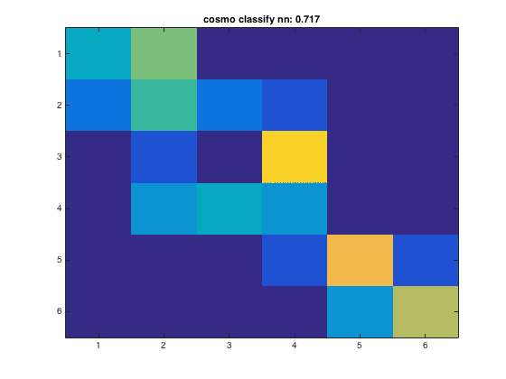
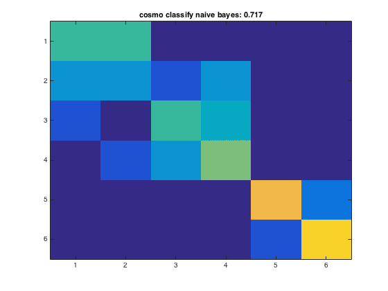
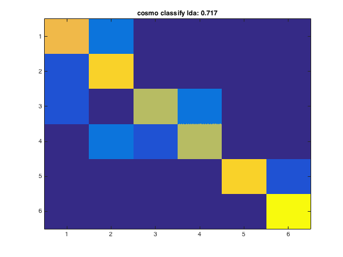
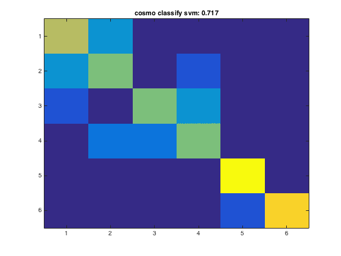

Cross validation example with multiple classifiers
This example runs cross validation and shows confusion matrix using multiple classifiers
- For CoSMoMVPA's copyright information and license terms, #
- see the COPYING file distributed with CoSMoMVPA. #
Contents
Define data
config=cosmo_config(); data_path=fullfile(config.tutorial_data_path,'ak6','s01'); data_fn=fullfile(data_path,'glm_T_stats_perrun.nii'); mask_fn=fullfile(data_path,'vt_mask.nii'); ds=cosmo_fmri_dataset(data_fn,'mask',mask_fn,... 'targets',repmat(1:6,1,10),... 'chunks',floor(((1:60)-1)/6)+1); % remove constant features ds=cosmo_remove_useless_data(ds);
Define classifiers in a cell
>@@>
classifiers={@cosmo_classify_nn,...
@cosmo_classify_naive_bayes,...
@cosmo_classify_lda};
% if svm classifier is present (either libsvm or matlab's svm), use that
% too
if cosmo_check_external('svm',false)
classifiers{end+1}=@cosmo_classify_svm;
end
% <@@<
nclassifiers=numel(classifiers);
Define partitions
partitions=cosmo_nfold_partitioner(ds);
Run classifications
Compute the accuracy and predictions for each classifier, and plot the confusion matrix
for k=1:nclassifiers classifier=classifiers{k}; % get predictions for each fold, and store the result in % a variable 'pred'. % This output is in a 60 x 10 matrix, corresponding to predictions % for all 60 samples and 10 folds % >@@> pred=cosmo_crossvalidate(ds, classifier, partitions); % <@@< % use cosmo_confusion_matrix to compute the confusion matrix for each % fold, and store the results in a variable 'confusion_matrix_folds'. % The output is 6 x 6 x 10, consisting of 10 confusion matrices each % of size 6 x 6 % >@@> confusion_matrix_folds=cosmo_confusion_matrix(ds.sa.targets,pred); % <@@< % sum the confusion matrix_folds alnog the third dimension to % obtain a single 6 x 6 confusion matirx. Store the result % in a variable named confusion_matrix % >@@> confusion_matrix=sum(confusion_matrix_folds,3); % <@@< % show the confusion matrix figure(); imagesc(confusion_matrix,[0 10]) title(sprintf('%s: %.3f', strrep(func2str(classifier),'_',' '), accuracy)) end   
Consider effect or normalization
normalizations={'zscore',...
'demean',...
'scale_unit',...
'none'};
for k=1:nclassifiers
classifier=classifiers{k};
classifier_name=strrep(func2str(classifier),'_',' ');
for j=1:numel(normalizations)
opt=struct();
opt.normalization=normalizations{j};
[pred,accuracy]=cosmo_crossvalidate(ds,classifier,partitions,opt);
fprintf('%s with %s-normalization: %.3f\n', classifier_name,...
opt.normalization, accuracy);
end
end
cosmo classify nn with zscore-normalization: 0.417 cosmo classify nn with demean-normalization: 0.450 cosmo classify nn with scale_unit-normalization: 0.450 cosmo classify nn with none-normalization: 0.450 cosmo classify naive bayes with zscore-normalization: 0.600 cosmo classify naive bayes with demean-normalization: 0.600 cosmo classify naive bayes with scale_unit-normalization: 0.600 cosmo classify naive bayes with none-normalization: 0.600 cosmo classify lda with zscore-normalization: 0.850 cosmo classify lda with demean-normalization: 0.833 cosmo classify lda with scale_unit-normalization: 0.817 cosmo classify lda with none-normalization: 0.833 cosmo classify svm with zscore-normalization: 0.733 cosmo classify svm with demean-normalization: 0.717 cosmo classify svm with scale_unit-normalization: 0.717 cosmo classify svm with none-normalization: 0.717